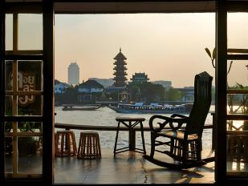
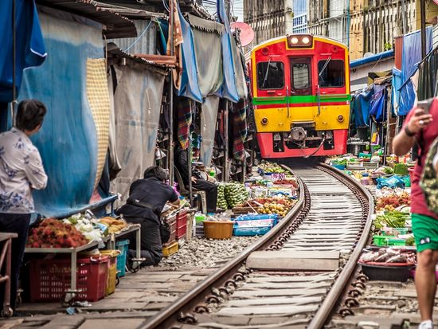
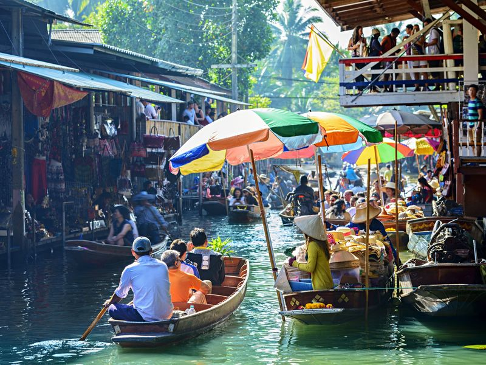

ロイラロンホテル
（Loy La Long Hotel）
チェックイン
Bangkok & Ayutthaya
2026.9.17.Thu. — 9.21.Mon.
タイ・エアアジアX XJ601
予約番号：HHYMJK
行き先はドライバーにワット・パトゥムカンカー寺院（What pathum Khongkha）と伝えるとスムーズ☆

Grabまたはタクシーで約15〜20分
①ワット・パークナムから徒歩（約10〜12分）で最寄り駅のMRTバーンパイ駅（Bang Phai）へ向かう
②MRTバーンパイ駅からブルーラインに乗車し、MRTサナームチャイ駅（Sanam Chai）で下車（約3駅／約6分）
③サナームチャイ駅（1番出口）から徒歩約5〜7分でスパンニガに到着
時間はホテルによって異なる

約10分
水上マーケットへ！（30分）
40分（小舟体験は別代金）

1時間
現地払い・約30分 ※行きたい人がいれば寄る
約35分
約30分
約15分
10:00頃にオープン。最低でも3時間必要。
・ソンワート通り（レトロ街並み）
・タラートノーイ通り（ホテル近く）
・アイコンサイアム
タイ国際航空 TG642
予約番号：DEHSAS
eチケット番号：217-9493676193
テキスト
※バスローブ・スリッパはなし
※シャワーの水圧は限りなく弱いが、ドライヤーの風圧は強い。